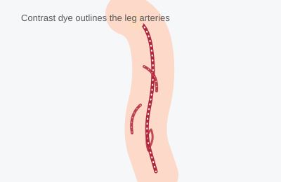

Peripheral Angiogram
A peripheral angiogram is similar to a cardiac catheterization, but it looks at the blood vessels outside the heart — most often the arteries in the legs, but sometimes the arms, kidneys, or other areas. It is used to find narrowing or blockages that reduce blood flow, commonly from peripheral artery disease (PAD).

Duration
30–90 minutes (plus prep and recovery)
Fasting
No food or drink for 6–8 hours before
Sedation
Light ("twilight") sedation, awake
Recovery
Few hours same-day, sometimes overnight
What Happens During the Procedure
Like a heart catheterization, you will receive mild sedation and local numbing medicine at the access site, usually in the groin or wrist. A thin catheter is guided, under X-ray guidance, into the artery that supplies the area being studied (commonly the leg arteries). Contrast dye is injected so the arteries show up clearly on X-ray images, allowing your doctor to see exactly where and how severely an artery is narrowed. If a significant blockage is found, it can often be treated in the same session with a balloon, stent, or other device to restore blood flow.
What the Patient Should Know
- No food or drink (except small sips of water with medications) for 6–8 hours beforehand, as directed by the office.
- Arrange for a ride home — you cannot drive yourself due to the sedation.
- Tell the office about all medications, especially blood thinners, metformin, and any kidney problems, since contrast dye is processed by the kidneys.
- You may be asked to shave or clean the access site area beforehand.
- You may feel warmth or flushing when the contrast dye is injected — this is normal and brief.
- Tell the team about any history of dye allergy.
Recovery
After the procedure, pressure is held (or a closure device used) at the access site, and you will need to lie flat and still for a period of time, especially with groin access, to prevent bleeding. Many peripheral angiograms are done as same-day outpatient procedures with a few hours of monitoring afterward; an overnight stay may be recommended if an intervention (stent or angioplasty) was performed. You will be given instructions on keeping the site clean, avoiding heavy lifting or strenuous activity for several days, and watching for signs of bleeding, swelling, or infection at the access site.
Why It Is Done
- Diagnose peripheral artery disease causing leg pain with walking (claudication), poor wound healing, or leg ulcers.
- Map out blockages before a planned intervention or surgery.
- Evaluate blood flow to other organs, such as the kidneys.
- Treat a blockage with angioplasty or stenting during the same visit.
Reliable Sources
- American Heart Association, Peripheral Artery Disease
- NHLBI, Peripheral Artery Disease
This page is for general education only and does not replace advice from your doctor. If you have questions about your own procedure, please contact the office.